Ner is a reading app for language learners. Tap any word to see what it means, grade how well you know it, and keep reading. The next page already knows what you learned.
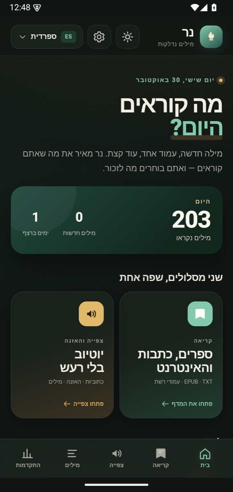
Books, pasted text, and web articles in one reader. EPUB chapters, TXT files, and text PDFs open directly.
New words are blue, learning words amber. Grade 1–4, mark known with K, or ignore with X.
A focused in-app YouTube player: recommendations, comments and the YouTube header are hidden, my controls collapse to one edge handle, and the lower half becomes a large caption workspace with translation. Clicking a word opens its meaning inside that same box, directly below the translation. If the local dictionary misses it, the translation service fills the same panel inline and saves it as a grade-1 vocabulary entry.
Hebrew, English, Arabic, Spanish, French, German, Italian, Portuguese, Dutch, Swedish, Danish, Norwegian, Finnish, Polish, Russian, Ukrainian, Greek, Turkish, Chinese, Cantonese, Japanese, Korean, Vietnamese, Indonesian, Thai.
Words, settings, and statistics are a local JSON file. Export a backup whenever you want.
First-run setup asks what to learn, what to translate into, and which interface language to use. The three choices stay independent.
Edit a meaning and its context sentence, then export a tab-separated file with word, reading, meaning, context, and language.
See how much storage each large book uses, delete a book and its file, or clean up orphaned book files left by old imports.
TXT and EPUB books are copied into app-private storage and streamed into the reader in 300 KB chunks. Large EPUBs keep their chapter TOC with byte-offset jumps and bookmarks that survive chunk changes. PDFs are served to PDF.js over a loopback Range server, so the whole file is no longer base64-encoded into the WebView.
Chinese and Cantonese use dictionary-driven segmentation in books, web pages and YouTube captions; Japanese and Thai use the best available word segmenter. Tap words, not isolated characters.
System, Hebrew, English, Hungarian, Spanish, French, German, Russian, or Arabic chrome. RTL for Hebrew and Arabic; LTR for the rest.
An in-app browser with address bar, back/forward/reload, request blocking, cosmetic cleanup, auto-skip, and a live blocked count.
Pick a native language or type any ISO 639-1 code. Meanings translate into it and cache locally; the default follows the device locale.
Text PDFs use PDF.js; image-only pages fall back to bundled Tesseract OCR with models for all 25 learning languages, fully on-device.
Host from one phone, join from the other with an IP and a six-digit code. Words, bookmarks, and stats merge locally.
The page, word sheet, status bar, and navigation bar all switch together.
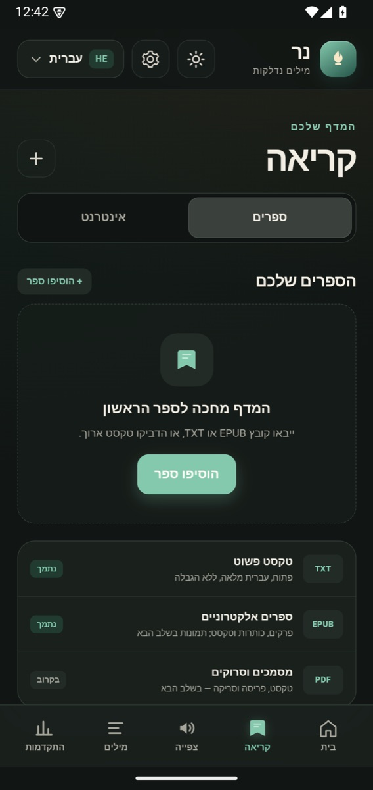
Books / Web, with a real shelf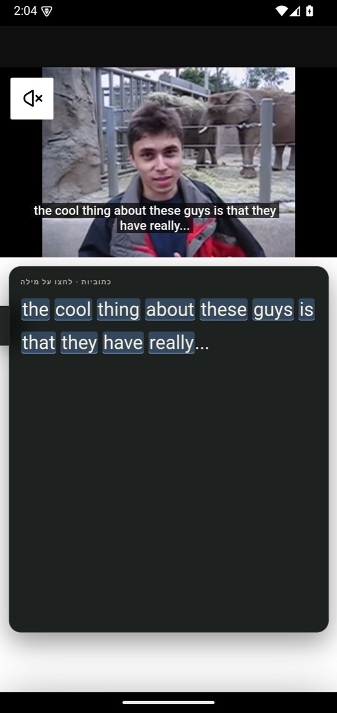
Focused video and a large caption workspace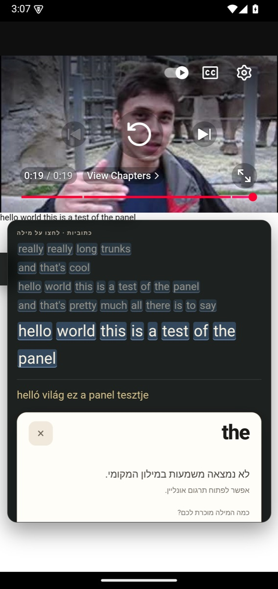
Caption, translation and word meaning in one panel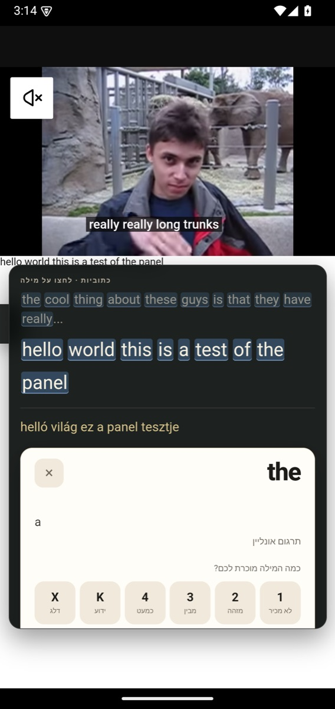
Missing dictionary word filled inline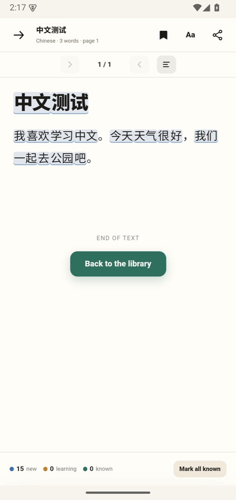
Chinese words, not single characters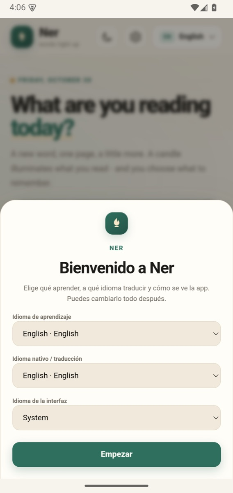
Ner 1.0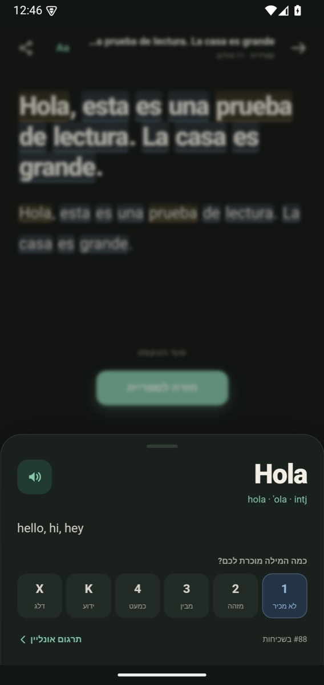
Offline lookup, 25 packs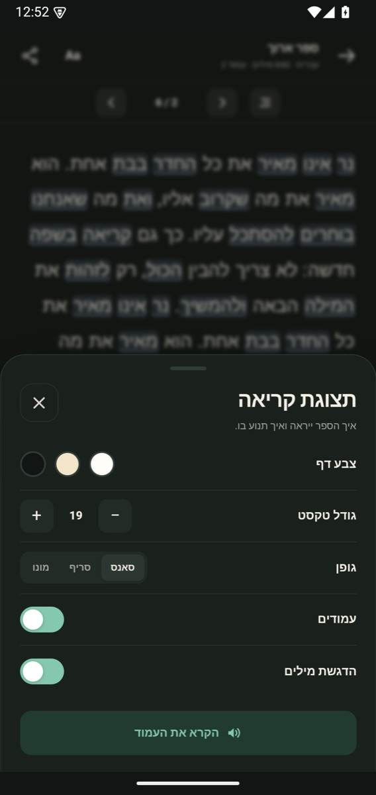
Page colour, font, paging, read aloud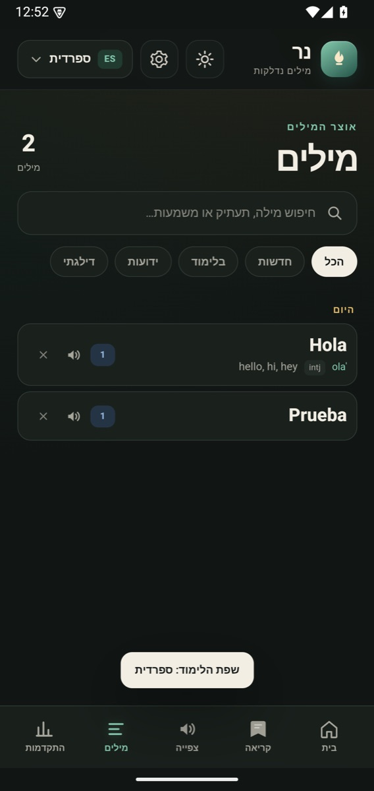
Words grouped by the day you met them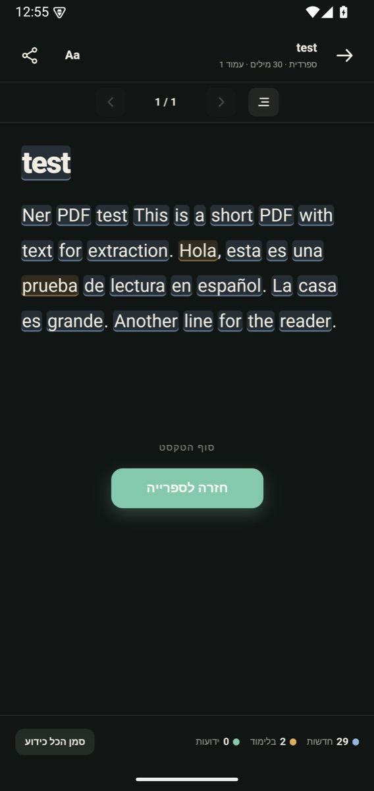
Text PDFs become paged reading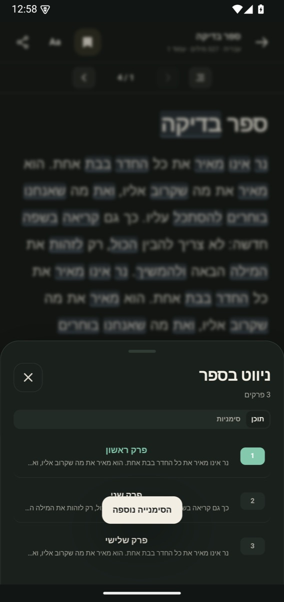
Chapter contents and page bookmarks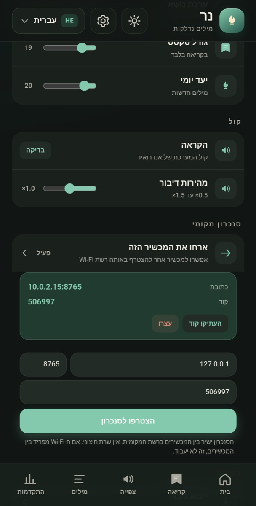
Two phones, one vocabulary — no cloud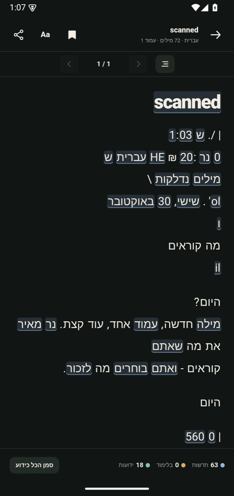
Scanned pages become readable text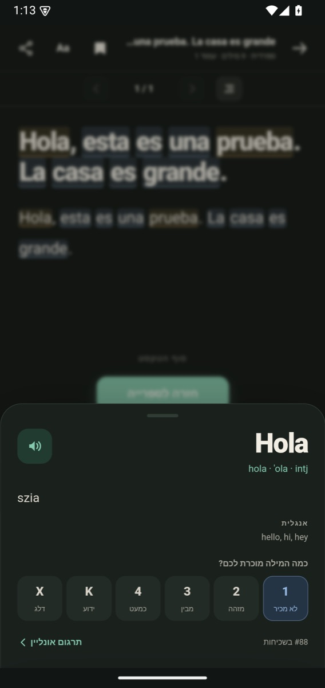
Any base language, not just Hebrew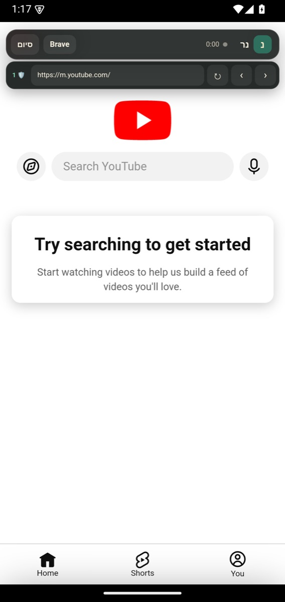
In-app address bar and shield count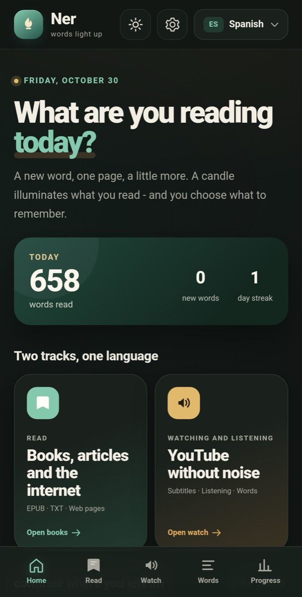
English chrome, LTR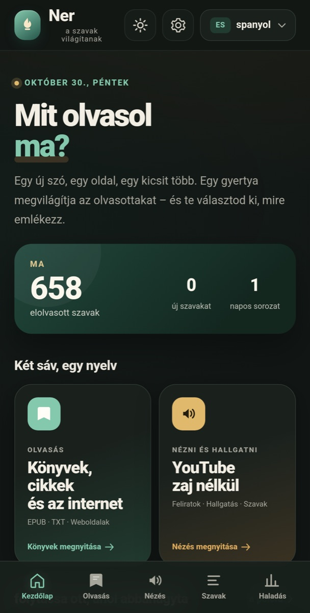
Magyar felület, LTR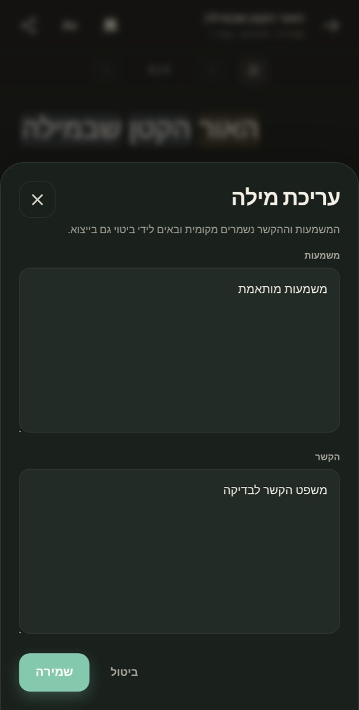
Edit meanings and context, then export to Anki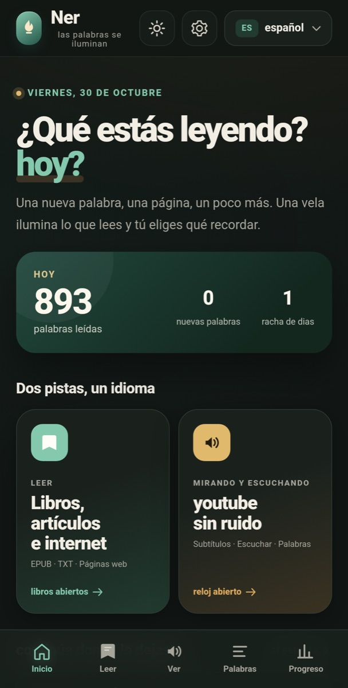
Español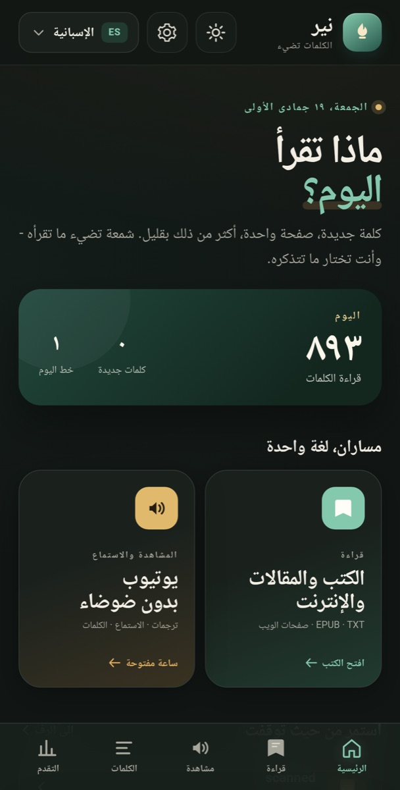
العربية, RTLDownload the APK on your Android phone.
Open it from the notification or Files. Android will ask permission to install from this browser — allow it once.
Read. No account, no sign-in. Your words stay on the phone.
android 8+e626ec68ac520387d9ee5f0819be0c1c5e3a0bbdfd1e6518369f1921f2cbad9bNer is an original, clean-room app inspired by the same reading workflow. It contains no Sluka code, assets, branding, or dictionaries.
Missing: UI languages beyond the current eight, direct AnkiDroid integration, cloud voices, and full morphology. Machine UI translations may have awkward phrasing. Base-language translation needs a connection the first time. Sync is LAN-only. Non-Hebrew dictionaries currently gloss into English, not Hebrew.